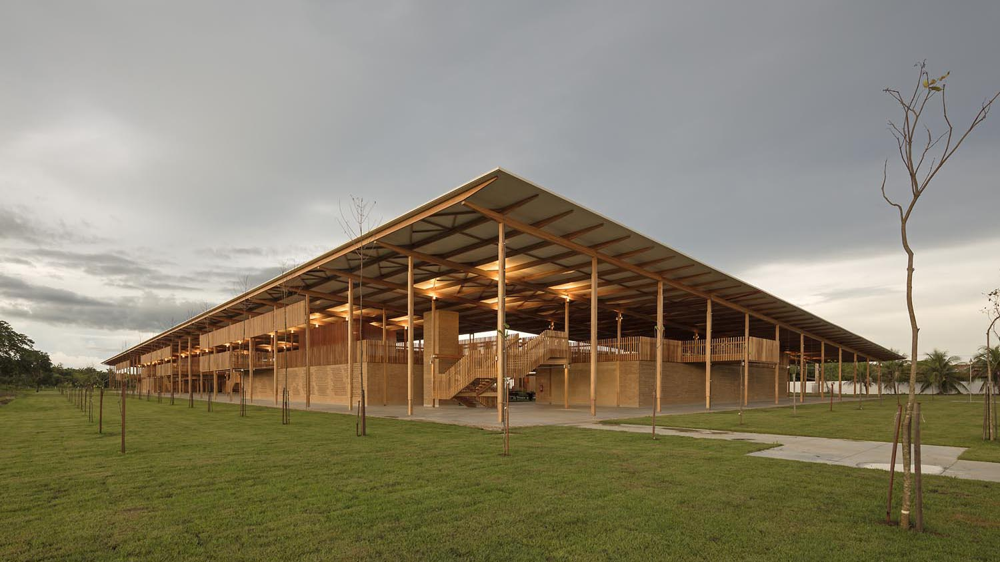

Fundação Bradesco
A Escola-fazenda de Canuanã é tão imensa quanto a paisagem local. Localizada no interior do Tocantins, em Formoso do Araguaia, ela é uma escola rural que funciona em regime de internato. Tem aproximadamente 1.200 crianças e é mantida pela Fundação Bradesco há quase 40 anos.
Endereço: Fazenda de Canuanã, s/n - Fazenda Canuanã CEP: 77470-000 Telefone: (63) 3339-1000 E-mail: canuana@fundacao.bradesco.